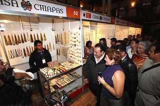
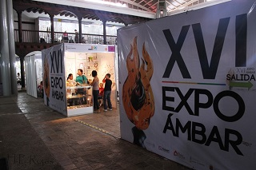
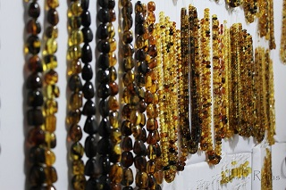
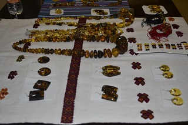
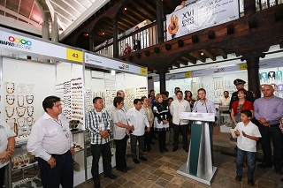

Es una tradición artesanal del estado de chiapas, son famosas por su exotismo y originalidad. Cada uno de los adornos, joyas y esculturas son realizadas con ámbar una resina fosilizada de origen vegetal.
Todo esto se hace presente en el mes de agosto en la exposición del ambar, un evento realizado en el pueblo mágico de san cristóbal de las casas.
Esta es una exposición comercial donde se pueden comprar diversos productos realizados con ámbar.
Esta exposición se realiza en el Centro de Convenciones Casa Mazariegos.
Si usted se encuentrado en la plaza de la paz viendo de frente hacia la catedral puede caminar hacia su derecha pasando por la plaza 31 de Marzo como referencia encontrará la farmacia similar continue caminando sobre el andador y justo a lado del rincon vino se encuentra el centro de convenciones casa mazariegos.
Si usted se encuentrado en la plaza de la paz viendo de frente hacia la catedral puede caminar hacia su derecha pasando por la plaza 31 de Marzo como referencia encontrará la farmacia similar continue caminando sobre el andador y justo a lado del rincon vino se encuentra el centro de convenciones casa mazariegos ahí se lleva a cabo la exposición del ámbar





posicione el mouse sobre las imágenes